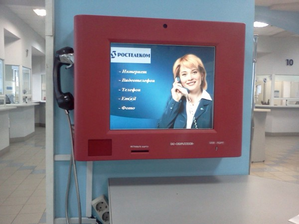

Сегодня поставил для себя точку в целой эпохе. Точка вообще ставилась весь последний десяток лет, но сегодня, кажется, всё.
Я съездил в «Сибирьтелеком» и закрыл договор, отказавшись от услуг проводной связи. Проводная связь ещё была востребована в начале прошлого года, когда «Сибирьтелеком» был моим провайдером. Да, я даже изредка подключал сам аппарат, чтобы позвонить в саппорт того же «Сибирьтелекома». Но прошлым летом я переключился на Билайн и, чтобы не затягивать в квартиру ещё один провод, обрезал сибирьтелекомовский прямо в коробке. Почти год я платил за телефон, даже не имея в квартире провода. Один раз даже пользовался услугой блокировки. Но она делается максимум на три месяца, а потом вновь стали приходить счета. В попытках отрезать пути отступления я перестал их оплачивать.
А вчера принесли бумажку, мол у «Сибирьтелекома» претензия. Я понял — пора.
Заехал на Октябрьский и написал заявление, оплатил накопившиеся долги. В «Сибирьтелекоме» всё уже давно хоть и совково, но довольно клиентоориентировано. Спросили о причинах, предложили блокировку, даже предложили пополнить сотовый.
А ведь раньше ГТС была совсем другой организацией. Она не то, чтобы не боролась за клиентов, скорее даже наоборот. Работа в ГТС на том же Советском проспекте строилась по худшим принципам взятым поровну от ЖЭКов и налоговой. Очереди, жлобство персонала (хотя раньше не было слова персонал).
За установку телефона, вниманию моих молодых друзей, нужно было платить! Большие деньги! Если есть техническая возможность! Для юридических лиц стоимость установки телефона равнялась кажется 12-15 тысячам рублей за номер. Причём номер вам не принадлежал. Задачей отдельных сотрудников ГТС было выяснение использования номера телефона не той организацией, на которую он зарегистрирован. При выявлении таких фактов, номер просто забирали. При переезде в другое здание номер конечно тоже пропадал. Таким образом мы, к примеру, подарили ГТС около 30 тысяч рублей переехав за Октябрьского, 53/2 на Соборную, 8.
Это выглядит как фантастика, но к телефонной сети нельзя было просто так подключить факс или модем (что такое модем можно узнать, посетив сайт Википедия). Нужно было писать заявление, чтобы была найдена техническая возможность. Это касается и АОНов (Автоматических Определителей Номера). Разумеется, подключить факс стоило дополнительных денег. Ночами ГТС рассылал по незаконно подключенным факсам факсы с гневным требованием занести денег.

Раз случился повод, можно ещё вспомнить про первые потуги кемеровских, а, наверное, не только кемеровских телефонистов, в деле перехода на оплату карточками. Около полугода, кажется в 95 году, технология звонка домой для многих некемеровских студентов выглядела так. Суешь карточку в телефон, набираешь номер. На том конце берут трубку, пока трубку не взяли, нужно было вытащить высокотехнологичную карточку из таксофона и вставить вместо неё подходящий кусок тетрапака или банки из под пива. Каждую минуту аппарат делал на карточке насечку.
Ещё я, в силу своего деревенского происхождения и среднего возраста, помню времена, когда на ГТСе работали Барышни, но тогда ещё деревья были большими и о тех барышнях у меня только приятные воспоминания.
И да, переведите, наконец, свои телефоны в тональный режим.